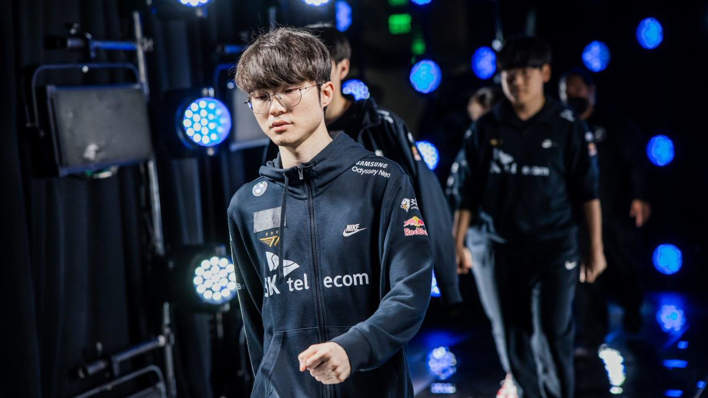

Achievements
Faker has consistently proven himself as one of the most accomplished and influential players in the history of competitive gaming. His dominance in the professional League of Legends scene is unparalleled, with a collection of world titles and a legacy that inspires players across the globe. Below are some of his most notable achievements:

3x World Champion (2013, 2015, 2016)
2x MSI Champion (2016, 2017)
10x LCK Champion

Over 500 LCK wins
Multiple MVP Awards
1st player to reach 100 international wins
Nicknamed "The Unkillable Demon King"
Revolutionized Mid Lane play with champions like Zed, LeBlanc, and Ryze

Best Player of the Year (2017)
Most Played Champions in LCK History